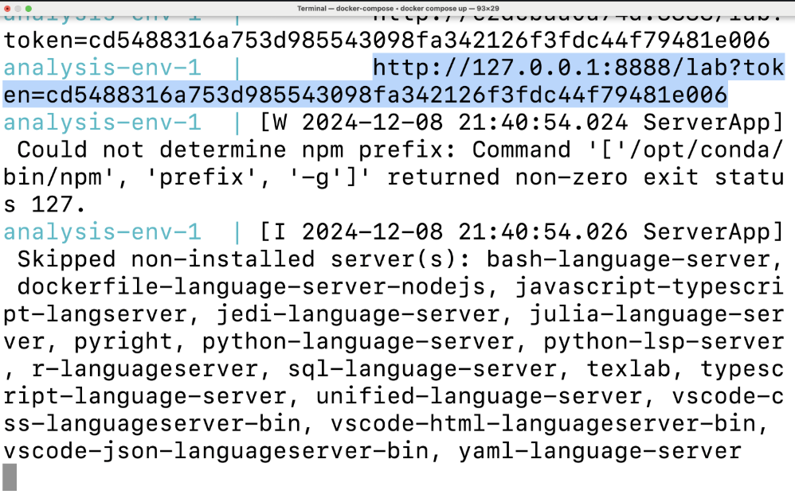
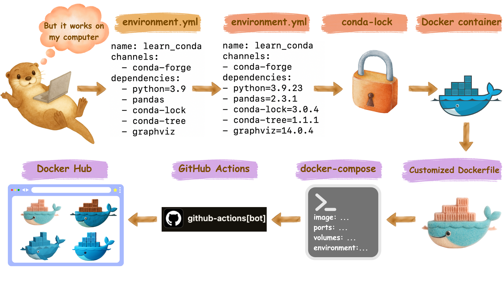

Docker & Docker Compose Cheatsheet
Quick Reference Guide for Docker Containerization
1 Docker Basics
1.1 Important Notes
Command lines are very sensitive to whitespace and quotation marks! Pay close attention to syntax.
Don’t use the TAG latest for images. Always use specific version tags instead for reproducibility.
1.2 📜 Basic Docker Run
- Example command to run a docker container:
docker run \
--rm \
-p 8788:8787 \
-e PASSWORD="apassword" \
rocker/rstudio:4.4.2- Explanation for the command above:
--rm: Automatically remove container when it exits-p 8788:8787: Map host port 8788 to container port 8787-e PASSWORD="apassword": Set RStudio password to be “appassword”rocker/rstudio:4.4.2: Image name with specific version tag
- After the docker image successfully runs, you can access RStudio at:
http://localhost:8788
1.3 Essential Docker Commands
| Task | Command |
|---|---|
| Pull an image from Docker Hub | docker pull <image_name>:<tag> |
| List all local images | docker images |
| List running containers | docker ps |
| List all containers (including stopped) | docker ps -a |
| Remove an image | docker rmi <image_name>:<tag> |
| Remove a container | docker rm <container_id> |
Common flags:
| Flag | Description |
|---|---|
--rm |
Automatically remove container when it exits |
-it |
Interactive terminal (combine -i and -t) |
-p <host_port>:<container_port> |
Port mapping |
-v <host_path>:<container_path> |
Volume mounting |
-e <VAR>=<value> |
Set environment variable |
--platform <platform> or -p <platform> |
Specify platform (e.g., linux/amd64) |
- Read the full docker cheatsheet in textbook
2 Docker Compose
2.1 Why use Docker Compose?
We use docker-compose.yml file because it simplifies the process of typing complex docker run commands.
2.2 Basic Commands
| Task | Command |
|---|---|
| Stark docker container | docker compose up |
| Stop docker container | Ctrl + C (then docker compose rm) |
2.3 Code we run in class: docker-compose.yml practice
Step-by-step instructions:
- Please first
cdto a local folder of your choice, don’t put all files in your home directory!
# Example `cd` command:
cd /Users/skysheng/Desktop/github/dsci522- Make a new folder called
demo_docker(or any other name you like)
mkdir demo_docker- Move into that folder we just created
cd demo_docker- Create a docker-compose.yml file using nano
nano docker-compose.yml- Copy and paste the following code into the
docker-compose.ymlfile. Local port is set at 8789, password is set topassword, username isrstudio.
services:
analysis-env:
image: rocker/rstudio:4.4.2
ports:
- "8789:8787"
volumes:
- .:/home/rstudio/project
environment:
PASSWORD: password
deploy:
resources:
limits:
memory: 5G- You can also create this file using Graphical user interface (GUI) like VSCode.
- If you used
nanoto create this file, you need to pressCntrl + Xto attempt exit, by default it will ask you to save the file. PressYand then pressEnterto save the file.
- Print out the content of the file to make sure it is correct.
cat docker-compose.yml- Launch the container using docker compose files.
docker compose upAfter the container is launched, your terminal will be hanging. You can open your browser and go to
http://localhost:8789to access RStudio.To stop the container, you need to type
Cntrl + Cin the terminal where you launched the container, and then type:
docker-compose rm3 Dockerfile
A Dockerfile contains instructions for building a custom Docker image.
Basic structure:
# Start with a base image
FROM base_image:tag
# Copy files
COPY local_path container_path
# Run commands
RUN command
# Set environment variables
ENV VAR_NAME=value3.1 Code we run in class: Dockerfile practice
Step-by-step instructions:
- Please first
cdto a local folder of your choice, don’t put all files in your home directory!
# Example `cd` command:
cd /Users/skysheng/Desktop/github/dsci522- Make a new folder called
demo_docker(or any other name you like)
mkdir demo_docker- Move into that folder we just created
cd demo_docker- Create a environment.yml file using nano
nano environment.yml- Copy and paste the following code into the
environment.ymlfile.
name: my_env
channels:
- conda-forge
dependencies:
- conda-lock=3.0.4
- pandas=2.3.3
- pandera=0.26.1
- pip=25.3
- python=3.11.14
- pip:
- deepchecks==0.19.1- You can also create this file using Graphical user interface (GUI) like VSCode.
- If you used
nanoto create this file, you need to pressCntrl + Xto attempt exit, by default it will ask you to save the file. PressYand then pressEnterto save the file.
- Print out the content of the file to make sure it is correct.
cat environment.ymlCreate an explicit conda-lock file for linux OS using the following command:
- Macbook users with Apple Silicon chips (M1-M4 chips):
- For Local testing: You will need to use the following command (command 1) to test the conda-lock file locally on your machine.
- For Remote GitHub deployment: You will need to run command 2 to create a conda-linux64.lock file for deployment on GitHub Actions using Ubuntu machine.
- Macbook users with Apple Silicon chips (M1-M4 chips):
# command 1:
conda-lock -k explicit --file environment.yml -p linux-aarch64- Everyone else can use the following command for both local testing and Remote GitHub deployment:
# command 2:
conda-lock -k explicit --file environment.yml -p linux-64- Create a Dockerfile file using nano, or you can use GUI like VSCode.
nano Dockerfile Copy and paste the following code into the
Dockerfilefile. We use jupyter minimal notebook image as an example, and copy the conda-lock file to the container.- Macbook users with Apple Silicon chips will need to:
- For Local Dockerfile testing: Use the following code (Dockerfile 1) to copy the conda-linux-aarch64.lock file to the container.
- For Remote GitHub deployment: Use the other code (Dockerfile 2) to copy the conda-linux64.lock file to the container for deployment on GitHub Actions using Ubuntu machine.
- Macbook users with Apple Silicon chips will need to:
# Dockerfile 1
FROM quay.io/jupyter/minimal-notebook:afe30f0c9ad8
COPY conda-linux-aarch64.lock /tmp/conda-linux-aarch64.lock- Everyone else can use the following code for both local testing and Remote GitHub deployment:
# Dockerfile 2
FROM quay.io/jupyter/minimal-notebook:afe30f0c9ad8
COPY conda-linux-64.lock /tmp/conda-linux-64.lock- Build the docker image locally using the following command:
# 10. Build the docker image locally, with the tag name `testing_cmds`.
# pay attention to the dot at the end of the command!
docker build --tag testing_cmds .- Run the docker image you just built using the following command:
- If you want to launch container’s terminal only:
Note: For Macbook users with Apple Silicon chips M4 chip, you may run into bugs here. The terminal may open, but once you try to type something, it will crash and come back to the base terminal environment.
docker run --rm -it testing_cmds ../../bin/bash- Launch interactive terminal on web browser:
Note: For Macbook users with Apple Silicon chips M4 chip, this will work for you.
docker run --rm -it -p 8888:8888 testing_cmdsWatch your terminal output for a unique URL beginning with http://127.0.0.1:8888/lab?token=. You’ll see it displayed as highlighted in the example screenshot below. Copy this URL and open it in your web browser to access the Jupyter Lab interface. You can access the terminal by clicking on the terminal icon inside of the Jupyter Lab interface.

- Once you are in the terminal, you can test if this command works. This command will update the base environment with the packages you specified in the conda-lock file.
conda update --quiet --file /tmp/conda-linux-64.lockIf the above command works, you can exit the terminal by typing
exit.Update the
Dockerfileto include this newly tested command.Dockerfilenow should look like this for Macbook users with Apple Silicon chips M1-M4 chip to test the command locally:
# Dockerfile 1
FROM quay.io/jupyter/minimal-notebook:afe30f0c9ad8
COPY conda-linux-aarch64.lock /tmp/conda-linux-aarch64.lock
RUN conda update --quiet --file /tmp/conda-linux-aarch64.lockDockerfile now should look like this for everyone else:
# Dockerfile 2
FROM quay.io/jupyter/minimal-notebook:afe30f0c9ad8
COPY conda-linux-64.lock /tmp/conda-linux-64.lock
RUN conda update --quiet --file /tmp/conda-linux-64.lock- Re-build the docker image locally using the following command:
# 15. Re-build the docker image locally, with the tag name `testing_cmds`.
# pay attention to the dot at the end of the command!
docker build --tag testing_cmds .- Run the docker image you just built using the same command as step 11. Then continue to test the following commands line by line in the terminal. Iterate through steps 12-14 (build a docker image –> run the docker container’s terminal –> test new command –> update the Dockerfile to include the new command –> build docker image again …) until you are happy with your Dockerfile.
# Clean up the cache files in building conda environment.
conda clean --all -y -f# Fix file permissions for the conda directory so all users can access it
fix-permissions "${CONDA_DIR}"# Fix file permissions for the user's home directory so the notebook user can read/write files
fix-permissions "/home/${NB_USER}"- 🎉 Final Dockerfile should look like this:
- Dockerfile for Macbook users with Apple Silicon chips M1-M4 chip testing locally:
# Final Dockerfile
FROM quay.io/jupyter/minimal-notebook:afe30f0c9ad8
COPY conda-linux-aarch64.lock /tmp/conda-linux-aarch64.lock
RUN conda update --quiet --file /tmp/conda-linux-aarch64.lock
RUN conda clean --all -y -f
RUN fix-permissions "${CONDA_DIR}"
RUN fix-permissions "/home/${NB_USER}"- Dockerfile for everyone else & Macbook user using GitHub Actions to deploy docker image remotely:
# Final Dockerfile
FROM quay.io/jupyter/minimal-notebook:afe30f0c9ad8
COPY conda-linux-64.lock /tmp/conda-linux-64.lock
RUN conda update --quiet --file /tmp/conda-linux-64.lock
RUN conda clean --all -y -f
RUN fix-permissions "${CONDA_DIR}"
RUN fix-permissions "/home/${NB_USER}"- Follow the same command in steps 10-11 to build and run the docker image you just built.
4 Conda + Docker + GitHub Actions Workflow

conda create&conda install- Create
environment.yml - Add version numbers
- Generate
conda-lockfile - Write
Dockerfile - Create
docker-compose.yml - Push to GitHub
- Add GitHub Actions workflow yml file
- Add Docker Hub Personal Access Token (PAT)
- Configure GitHub Secrets
- Workflow runs (auto/manual)
- Check Docker Hub for new image
- Locally,
docker pullnew image - Locally, command line
docker run